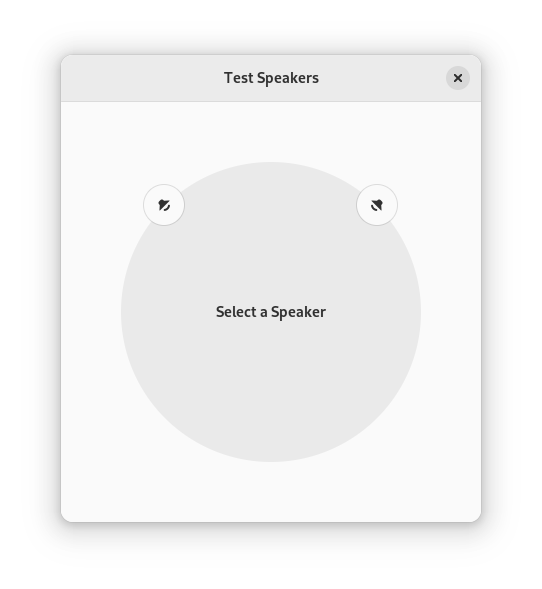
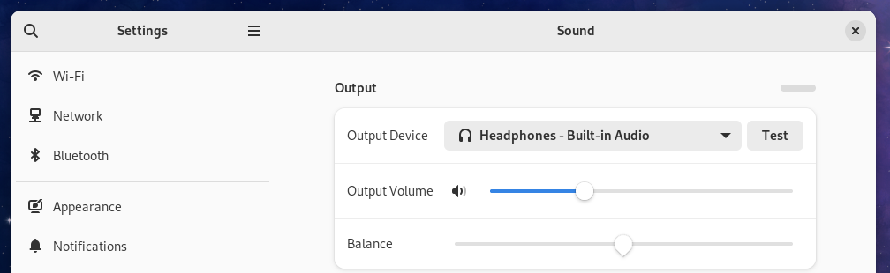

I’m on Fedora 37 at the moment. My headphone audio is backwards. How do we fix it? I’ve apparently never found the right magic until now.
I have a crappy “couch computer”. It’s used for casual internet browsing and video watching. It has an analog audio out which goes to my speakers. I’d like to use headphones for when I don’t want to annoy my neighbours. I have a pair of wireless headphones that I got for free, but the battery doesn’t last longer than an hour. I also have an old pair of analog headphones that work okay and don’t run out of battery! I got a free USB to analog dongle, but for some reason the left and right audio channels are reversed!
I have no idea. I assume it’s some driver issue. I have no idea how I’d report it, but if you do, please do so. I’m happy to provide any missing device ID’s you need.
(1) Find the node.name of your headphones. Run wpctl status. You want the
sinks section. Mine looks like this:
$ wpctl status
...
[snip]
...
Audio
├─ Devices:
│ 74. H600 [Wireless Headset] [alsa]
│ 105. Built-in Audio [alsa]
│ 124. Yealink UH33 [Crappy USB thing] [alsa]
│
├─ Sinks:
│ 91. Yealink UH33 Analog Stereo [Crappy] [vol: 0.48]
│ * 153. Built-in Audio Analog Stereo [vol: 0.23]
│ 184. H600 [Wireless Headset] Analog Stereo [vol: 0.85]
...
[snip]
You’ll see some random int next to the device in question. In the above example
it is 91.
(2) Now run: wpctl inspect 91. I see something like:
$ wpctl inspect 91
id 91, type PipeWire:Interface:Node
alsa.card = "3"
alsa.card_name = "Yealink UH33"
alsa.class = "generic"
alsa.device = "0"
alsa.driver_name = "snd_usb_audio"
alsa.id = "USB Audio"
alsa.long_card_name = "Yealink Yealink UH33 at usb-0000:00:14.0-10, full speed"
alsa.name = "USB Audio"
alsa.resolution_bits = "16"
alsa.subclass = "generic-mix"
alsa.subdevice = "0"
alsa.subdevice_name = "subdevice #0"
api.alsa.card.longname = "Yealink Yealink UH33 at usb-0000:00:14.0-10, full speed"
api.alsa.card.name = "Yealink UH33"
api.alsa.path = "front:3"
api.alsa.pcm.card = "3"
api.alsa.pcm.stream = "playback"
audio.adapt.follower = ""
audio.channels = "2"
audio.position = "FL,FR"
card.profile.device = "4"
* client.id = "93"
clock.quantum-limit = "8192"
device.api = "alsa"
device.class = "sound"
* device.id = "124"
device.profile.description = "Analog Stereo"
device.profile.name = "analog-stereo"
device.routes = "1"
* factory.id = "18"
factory.mode = "merge"
factory.name = "api.alsa.pcm.sink"
library.name = "audioconvert/libspa-audioconvert"
* media.class = "Audio/Sink"
* node.description = "Yealink UH33 Analog Stereo"
node.driver = "true"
* node.name = "alsa_output.usb-Yealink_Yealink_UH33_A02017101005-00.analog-stereo"
* node.nick = "Yealink UH33"
node.pause-on-idle = "false"
* object.path = "alsa:pcm:3:front:3:playback"
* object.serial = "68003"
* priority.driver = "1009"
* priority.session = "1009"
(3) Look for node.name. We’ll need that in a second. Mine is:
"alsa_output.usb-Yealink_Yealink_UH33_A02017101005-00.analog-stereo".
(4) Create a new file in: ~/.config/wireplumber/main.lua.d/51-alsa-swap-headphones.lua.
You might need to create those directories. You can name the file something
different as long as it ends in .lua. The file contents should be:
-- Thanks purpleidea!
rule = {
matches = {
{
{ "node.name", "matches", "alsa_output.usb-Yealink_Yealink_UH33_A02017101005-00.analog-stereo" },
},
},
apply_properties = {
-- ["audio.channels"] = 2,
["audio.position"] = "FR,FL",
},
}
table.insert(alsa_monitor.rules, rule)
You’ll note I showed you how to add a comment, and I also commented out an
unused property. You can use this format to add more if you want. The
audio.position property has been swapped. “Front Right” now comes first, and
then “Front Left” since the device has them backwards.
(5) Run systemctl --user restart wireplumber.service. Enjoy your fixed audio!
GNOME audio settings tester:
|  |
If you prefer the command line, you can use speaker-test like this:
speaker-test -t wav -c 2 -l 1
Change the -c value to a bigger value like 6 if you have more channels.
|  |
Add a “swap channels” option here under “balance”. Your users will love you. This seems to be a fairly common request.
The two links that helped me finally solve this are:
https://bbs.archlinux.org/viewtopic.php?id=285115 and https://wiki.archlinux.org/title/WirePlumber#Obtain_interface_name_for_rules_matching
Thanks to haigioli whoever you are!
I hope you enjoyed this and that it helps you find the answer quicker.
Happy Hacking,
James
You can hire James and his team at m9rx corporation.
You can follow James on Mastodon for more frequent updates and other random thoughts.
You can follow James on Twitter for more frequent updates and other random thoughts.
You can support James on GitHub if you'd like to help sustain this kind of content.
You can support James on Patreon if you'd like to help sustain this kind of content.
Your comment has been submitted and will be published if it gets approved.
Click here to see the patch you generated.
{kind=link}
{kind=link}
Comments
Nothing yet.
Post a comment